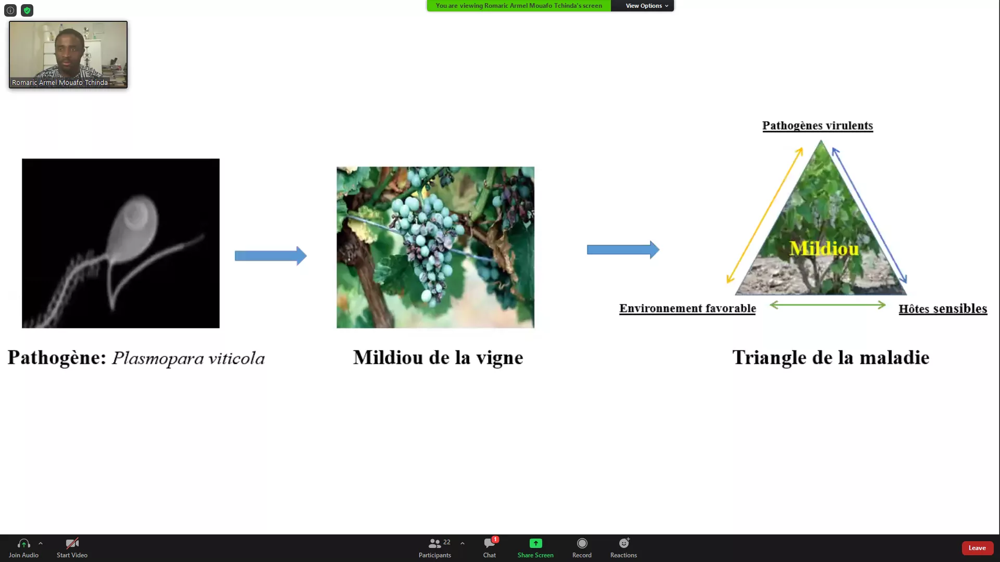
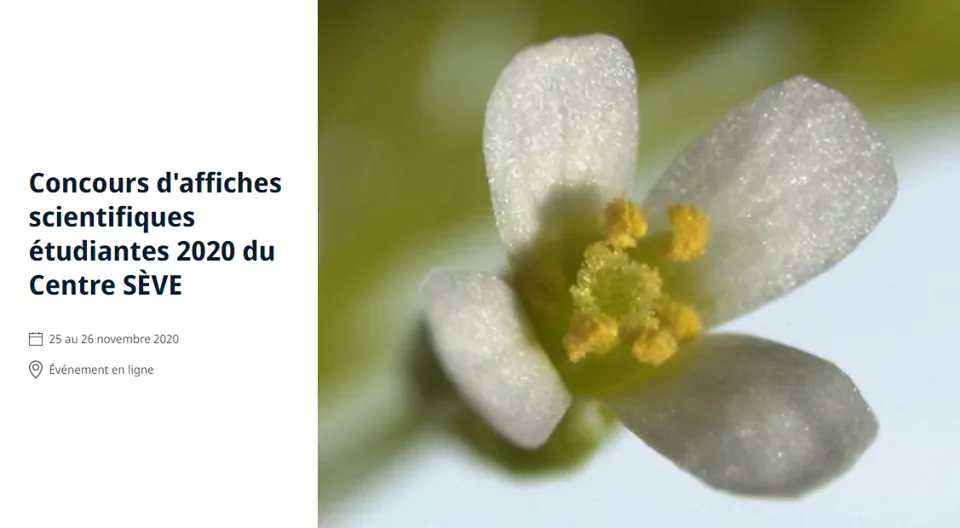
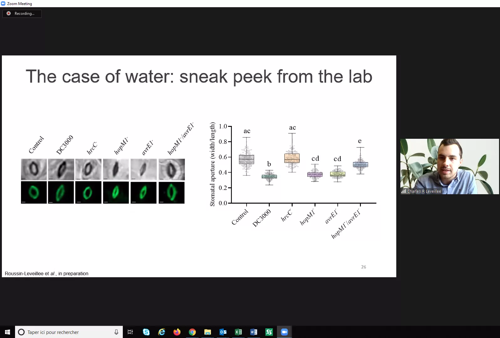
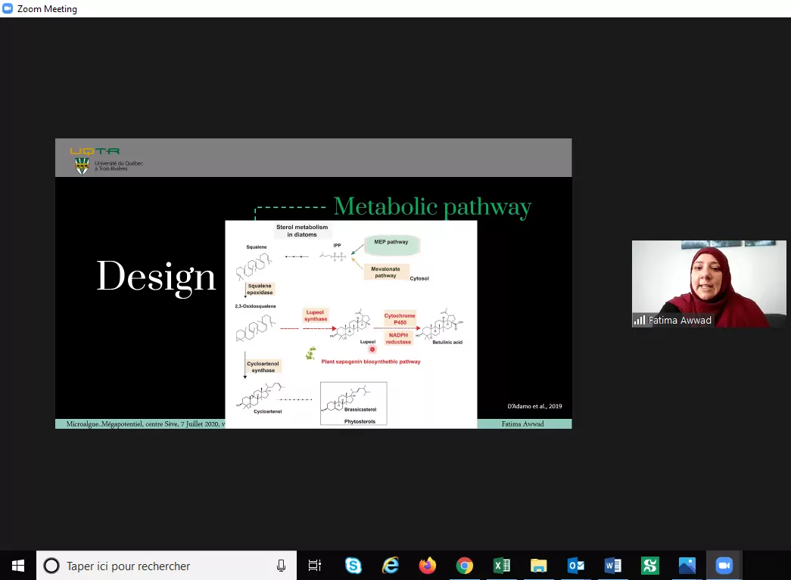
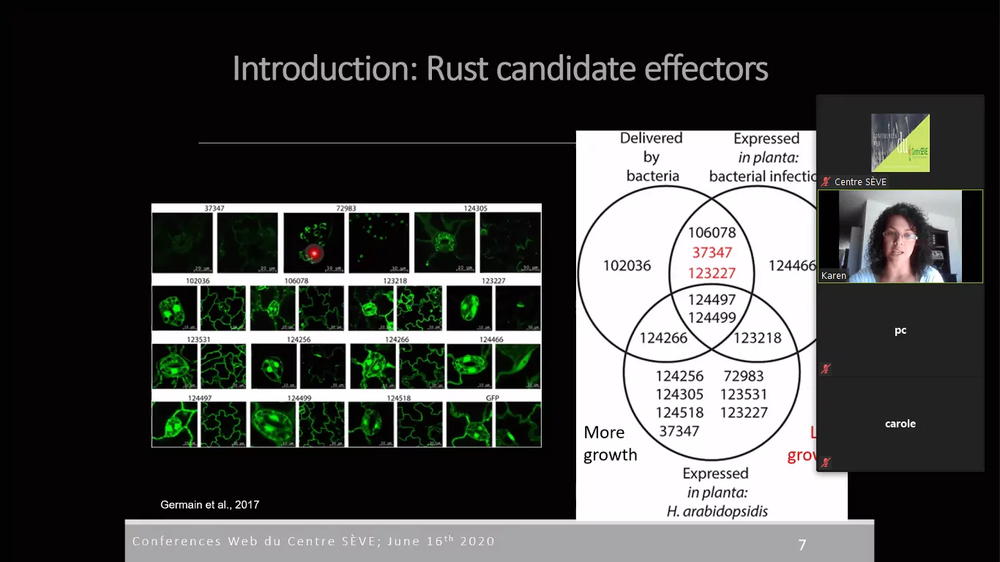

2020-11-06
Felicitations à Aracely Maribel Diaz Garza, notre secrétaire, pour son article sur la dynamique temporelle des rhizobactéries dans les cultures cultivées dans un écosystème semi-aride.
Bravo!
Enregistrez pour
recevoir les alertes des événements du CPICS.
2020-11-06
Felicitations à Aracely Maribel Diaz Garza, notre secrétaire, pour son article sur la dynamique temporelle des rhizobactéries dans les cultures cultivées dans un écosystème semi-aride.
Bravo!2020-11-10
Prochain webinar Synbio Canada, organisé par une de nos membres, Fatima Awwad.

2020-11-06
Felicitations à Karen Cristine Goncalves, notre secrétaire, pour son preprint sur des effecteurs candidates des champignons.
Bon travail!
Preprint: Differential alteration of plant functions by homologous fungal candidate effectors2020-11-05
Félicitations à Fadoua Dhaouadi, Fatima Awwad et Andrew Diamond pour la publication de cette review scientifique sur les Diatomées.
Premier papier pour Fadoua Dhaouadi, ça se fête!
Papier: Diatoms’ breakthroughs in biotechnology: Phaeodactylum tricornutum as a model for producing high-added value molecules2020-10-27
Aujourd’hui, Romaric Armel Mouafo Tchinda a pratiqué sa présentation pour Ma thèse en 180s de l’ACFAS, où il représentera l’Université de Sherbrooke.
Suivez la finale le 19 novembre.
2020-10-24
Soumis par ses étudiants, les laboratoires des Dre Isabel Desgagné-Penix et Dr. Hugo Germain ont obtenu le Prix d’excellence du Bureau Canadien de l’Éducation Internationale pour les politiques d’équité, de diversité et d’inclusion menées au quotidien.
Félicitations!2020-10-02
Nous sommes heureux de vous inviter au Concours d’affiches scientifiques étudiantes 2020 du Centre SÈVE. Cet événement virtuel aura lieu les 25 et 26 novembre 2020. Le portail d’inscription pour les participants et pour soumettre une communication par affiche est maintenant en ligne. Vous y trouverez aussi toutes les informations sur l’événement.
Au plaisir de vous y voir en grand nombre !
2020-09-22


2020-08-17
Vous souhaitez en savoir plus sur notre invitée Isabelle Laforest-Lapointe, de l’USherbrooke pour le 25 août?
Lisez cet article
sur son travail !!

2020-08-14
Vous souhaitez en savoir plus sur notre invitée Leena Tripathi pour le 25 août?
Regardez cette vidéo de IITA
CGIAR sur son travail !!
2020-08-10
Le Centre SÈVE annonce une nouvelle série de Conferences web
qui commence le 15 septembre!

| 15 Septembre | François Belzile | Aventures dans l’univers des SNP : un premier bilan de SoyaGen, un projet de grande envergure en génomique du soya |
| 22 Septembre | Charles Roussin-Léveillée | The Apoplastic Battleground in Plant-Pathogen Interactions |
| 29 Septembre | Vicky Lévesque | L’amendement en biochar: Une approche durable pour améliorer la santé du sol et la croissance de la plante en horticulture |
| 13 Octobre | Hamid Akbarzadeh | Sustainable Bio-inspired Metamaterials |
| 20 Octobre | Valerio Hoyos-Villegas | The McGill Field Phenomics Platform: Increasing Resolution for Complex Trait Improvement |
| 27 Octobre | Tagnon Missihoun |
2020-07-29
Felicitations aux etudiants du Centre SEVE qui presentent dans le Worldwide Plant Biology Summit 2020. Vous pouvez voir leurs affiches sur notre twitter (link en bas).
Amir Bidhendi, Francisco Campos, Gaële Lajeunesse, and Julian Henao-Martinez
Adrien Fremont, Charles Roussin-Léveillée, Eszter Sas and Guilherme Silva-Martins
| IRBV | McGill University | Université de Laval | Université de Montréal | Université de Sherbrooke |
|---|---|---|---|---|
| Camille Auger | Amir Bidhendi | Francisco Campos | Eszter Sas | Charles Roussin-Léveillée |
| Adrien Fremont | Karuna Kapoor | Gaële Lajeunesse | ||
| Meha Sharma | [Guilherme Silva-Martins] | |||
| Julian Henao-Martinez | Iauhenia Isayenka |
2020-07-07

Fatima Awwad, postdoc de l’UQTR, nous a presenté aujourd’hui le potentiel des microalgues dans les conférences Web du Centre SÈVE. Merci à tous les participants!
Source: Centre SEVE2020-06-16

Une autre captivante conférence Web du Centre SÈVE aujourd’hui, avec Karen Cristine Goncalves de l’UQTR. Merci à tous les participants!
Source: Centre SEVE
2020-05-09
Bienvenue à Aracely Maribel Diaz Garza et Vincent Charron-Lamoureux à l’administration du CPICS à titre de secrétaire en remplacement de Alexia Bertholon, qui a dû se retirer du comité.
Félicitation à vous deux !
2020-03-02
Félicitations à Claire Letanneur, doctorante à l’UQTR, pour l’octroi d’une subvention au premier concours du programme DIALOGUE - volet relève étudiante! Seulement quatre projets étaient sélectionnés pour chaque secteur de recherche des FRQ.